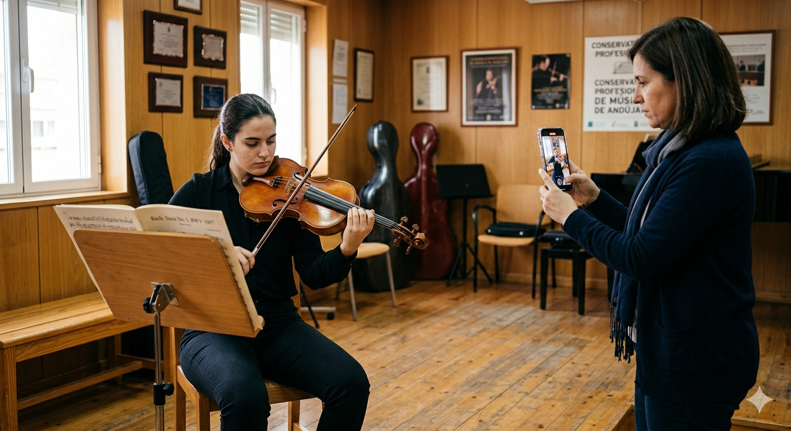
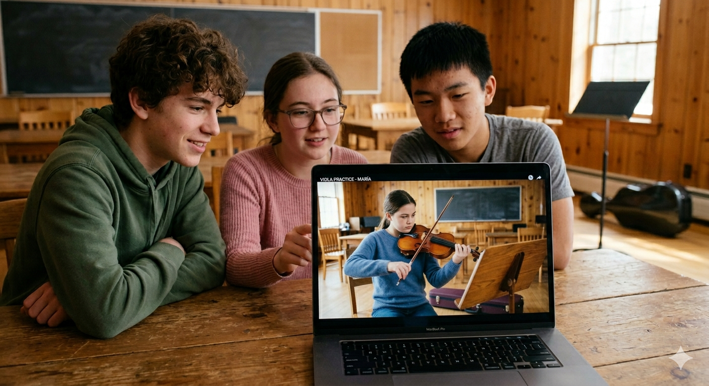

Presentación del proyecto
En las siguientes secciones vamos a encontrar una explicación del proyecto que se va a llevar a cabo, qué va a hacer el alumnado y para qué sirve el proyecto.

Imagen generada por IA con Google Gemini.
Descripción del proyecto.
La actividad consiste en que el alumnado interprete un fragmento u obra que se esté trabajando en clase para realizar una primera grabación, al finalizar escuchamos la interpretación grabada con un dispositivo digital. Para ello, utilizamos un dispositivo digital del centro o en caso de no estar disponible mi tablet particular para luego subir la grabación a Google Classroom y que la tengan a su alcance. Una vez visualizadas las grabaciones se realiza la autocrítica constructiva para localizar aspectos a mejorar y poder trabajarlos en casa. Al cabo de unas sesiones de trabajo y mejora se realiza otra grabación y se escucha para comprobar la diferencia y los aspectos de mejora ya realizados.
Mediante el uso de Google Drive también se pueden ir ordenando las grabaciones junto con la fecha de la clase en la que se realizan para tener un orden y en caso de repetir la actividad con otras obras o fragmentos, poder tenerlos todos localizados.
Qué hace el alumnado
El proyecto pretende que el alumnado desarrolle la capacidad de escucharse de forma crítica y reflexiva mediante el uso de grabaciones de su propia interpretación. A través de esta herramienta, se trabajan aspectos técnicos como la afinación, el ritmo y la calidad del sonido, así como elementos musicales como la expresividad, el fraseo y las dinámicas.
Además, se fomenta la participación activa del alumnado en su propio proceso de aprendizaje, promoviendo la autoevaluación y el diálogo con el docente. La tecnología se utiliza como un apoyo que complementa el trabajo instrumental habitual.
El proceso consiste en:
- Interpretar una pieza musical que se esté trabajando en clase y grabarla.
- Guardar cada grabación en su carpeta personal de Google Drive.
- Escuchar la grabación de forma guiada.
- Identificar aspectos técnicos y musicales.
- Reflexionar sobre su interpretación.
- Repetir la interpretación aplicando mejoras.
Gracias a Google Drive, el alumnado puede ordenar sus grabaciones en carpetas personales. Dentro de ellas, se crean subcarpetas para cada pieza trabajada, guardando las distintas versiones de sus interpretaciones con la fecha de la interpretación. Esto nos permite ver la evolución y reforzar la autoevaluación.
¿Para qué?
El uso de la grabación de audio y vídeo como recurso didáctico para fomentar la escucha activa, la autoevaluación y la mejora de la interpretación musical en el alumnado de viola ya que de esta manera se desarrolla la capacidad de autoanálisis crítico gracias a la integración de la tecnología en el aula como apoyo al aprendizaje instrumental integrado en la práctica musical.
Además, este proyecto se fundamenta en una experiencia previa en el aula en la que se incorporó la grabación como recurso didáctico. Tal y como se refleja en la rutina de pensamiento, la actividad resultó positiva, ya que permitió al alumnado realizar una escucha más consciente de su interpretación y facilitó el análisis de aspectos técnicos y musicales de forma más concreta.
No obstante, también se identificaron aspectos de mejora, como la necesidad de explicar previamente el objetivo de la actividad y de dedicar más tiempo a familiarizar al alumnado con esta dinámica. Asimismo, se observó que repetir este tipo de actividades a lo largo del curso puede ayudar a consolidar la escucha crítica como parte del aprendizaje.
A partir de estas conclusiones, este proyecto propone una aplicación más estructurada de la actividad, con una mejor organización del tiempo y una mayor intencionalidad pedagógica. De este modo, se busca aprovechar el potencial de recursos digitales sencillos para enriquecer el proceso de enseñanza-aprendizaje sin sustituir la práctica instrumental.
El uso de Google Drive añade un valor pedagógico al proyecto, que permite al alumnado visualizar su evolución, organizar su trabajo y tomar conciencia de su mejora.
¿Qué vas a aprender?
En este proyecto vas a aprender a mejorar tu interpretación con la viola utilizando una herramienta muy importante: la escucha de tu propia grabación.
A lo largo de las diferentes actividades, trabajarás no solo la interpretación musical, sino también tu capacidad para analizar y reflexionar sobre cómo tocas. Esto te ayudará a ser más consciente de tus puntos fuertes y de los aspectos que puedes mejorar.
En concreto, aprenderás a:
- Escucharte de forma atenta y crítica después de tocar.
- Identificar aspectos técnicos como la afinación, el ritmo y la calidad del sonido.
- Mejorar la expresividad en tu interpretación musical.
- Aplicar correcciones a partir de lo que has escuchado en tu propia grabación.
- Utilizar herramientas digitales sencillas para grabarte y revisar tu interpretación.
Además, este proyecto te ayudará a desarrollar tu autonomía como músico o música, ya que aprenderás a evaluar tu propio trabajo y a tomar decisiones para mejorar de forma progresiva.
Recuerda que el objetivo no es hacerlo perfecto desde el principio, sino ir mejorando poco a poco a través de la práctica y la reflexión.

Imagen generada por IA con Google Gemini.